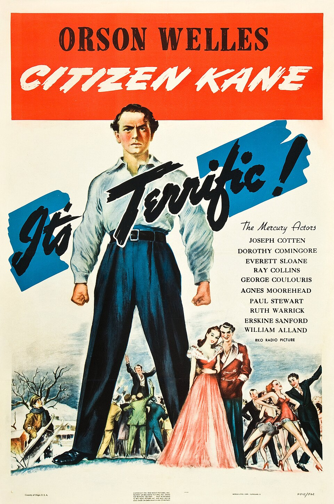

Эра звука и «золотой век» Голливуда
1927 – 1948

10 самых влиятельных фильмов эры
Единого официального списка нет. Этот список составлен по общим обзорам истории кино (источники — внизу главной страницы). Фильмы идут по году выпуска.
- Певец джаза (The Jazz Singer)
Алан Кросланд, 1927 - Белоснежка и семь гномов (Snow White and the Seven Dwarfs)
Дэвид Хэнд, 1937 - Дилижанс (Stagecoach)
Джон Форд, 1939 - Унесённые ветром (Gone with the Wind)
Виктор Флеминг, 1939 - Волшебник страны Оз (The Wizard of Oz)
Виктор Флеминг, 1939 - Гражданин Кейн (Citizen Kane)
Орсон Уэллс, 1941 - Касабланка (Casablanca)
Майкл Кёртиц, 1942 - Двойная страховка (Double Indemnity)
Билли Уайлдер, 1944 - Рим — открытый город (Roma, città aperta)
Роберто Росселлини, 1945 - Похитители велосипедов (Ladri di biciclette)
Витторио Де Сика, 1948